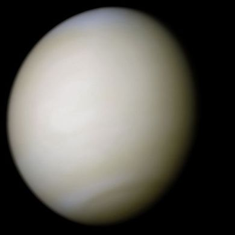

الزهرة Venus، هو ثاني أكبر كوكب من حيث قربة إلى الشمس، يدور حولها كل 224.7 يوم أرضي. ليس للزهرة أي سواتل طبيعية. يسمي بالإنگليزية ڤينوس Venus على اسم على اسم إلهة الحب والجمال الرومانية. بعد القمر، يعتبر أكثر الأجرام الطبيعية سطوعاً في سماء الليل. وفي عدة أشهر من كل سنة وفي نصف السنة تكون الزهرة مرئية فوق الأفق الغربي في المساء بسطوع يفوق أسطع النجوم بعشر مرات. وفي تلك الأوقات، يبلغ ذهول كثير من الناس من هذا السطوع الشديد درجةً يظنون فيها أنها ليست جرماً طبيعياً.
